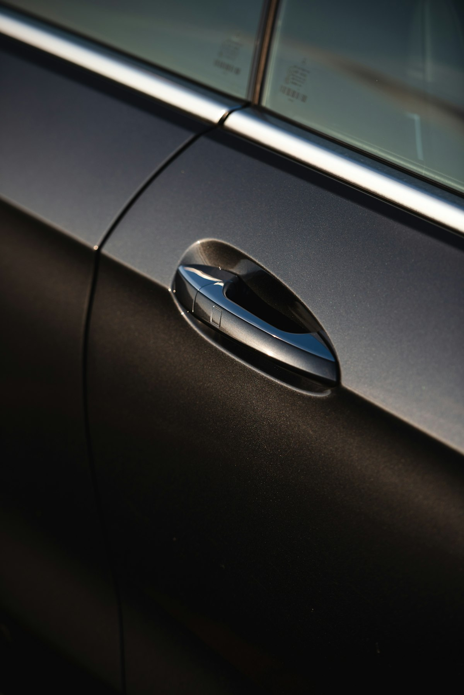

Захлопнув ключі в авто — що робити? Покрокова інструкція

Захлопнули ключі в машині? Спочатку — головне: не панікуйте і не намагайтесь розбити скло. У 99% випадків авто відкривається за 5–20 хвилин без жодних пошкоджень. Розбите скло обійдеться вам у 3 000 – 15 000 грн, тоді як аварійне відкриття у Seven Keys коштує від 500 грн із виїздом по Ужгороду протягом 15–30 хвилин.
Зараз сидите біля авто і не знаєте що робити?
Зателефонуйте — приїдемо протягом 15–30 хвилин по Ужгороду
Що зробити прямо зараз — 4 кроки
- Перевірте всі двері й багажник. Часто хоча б одні двері залишаються незачиненими. На багатьох авто з центральним замком кришка багажника відкривається окремо — спробуйте.
- Перевірте, чи є запасний ключ. Зателефонуйте додому, родичам, дружині/чоловіку — можливо, запасний ключ поруч і його можна швидко привезти.
- Зателефонуйте майстру. Якщо запасного немає — наберіть +38 (099) 605-78-86. Назвіть марку, модель, рік і адресу. Озвучимо ціну і час виїзду одразу.
- Зачекайте біля авто. Не намагайтеся самостійно влізти через вікно, не використовуйте дротики чи лінійки — на сучасних авто це з ймовірністю 80% призведе до пошкодження ущільнювачів, скла або обшивки дверей.
Чого НЕ робити в жодному разі
- Не розбивайте скло. Заміна заднього скла — 3 000–8 000 грн, переднього бокового — від 5 000 грн, лобового на преміум-авто — від 15 000 грн.
- Не намагайтеся «протягнути» лінійку чи дротик. На сучасних авто (2010+) це майже завжди ламає ущільнювач або корпус замка.
- Не викликайте «дешевих» майстрів з оголошень за 200 грн. Часто це люди без обладнання, які роблять відкриття пошкодженням замка чи скла, а потім ви платите за ремонт.
- Не залишайте авто без нагляду. Особливо якщо в салоні залишились цінні речі, ключі від квартири або документи.
Як ми відкриваємо авто — без пошкоджень
Основний спосіб — відкриття через личинку замка (lock cylinder). Це найбезпечніший і найшвидший метод: професійною відмичкою (lockpick) майстер за кілька хвилин підбирає секрет личинки, після чого замок відкривається штатно — як рідним ключем. Жодного втручання в двері, ущільнювачі чи електроніку.
У нас на озброєнні професійні відмички під усі типи замків: HU64, HU66, HU100, NSN14, HY22, TOY43, KIA8 та інші. У рідкісних випадках, коли личинка пошкоджена або заблокована, використовуємо повітряні клини (м'яко відсувають двері від ущільнювача) і м'які підкладки для доступу до внутрішньої ручки.
Інструмент розрахований саме на те, щоб не залишити жодних слідів — ні на ущільнювачах, ні на ЛКП, ні на склі. Працюємо з усіма марками: VW, Audi, BMW, Mercedes, Toyota, Honda, Hyundai, Kia, Renault, Ford, Mazda, Skoda та іншими.
Часті запитання
Чи потрібні документи на авто?
Так. Перед відкриттям ми попросимо показати техпаспорт або інший документ, який підтверджує, що ви — власник або користувач. Це обов'язкова умова, щоб не допомагати викрадачам.
Що, якщо в машині залишилась дитина або тварина?
Скажіть це по телефону одразу — таку заявку ми обслуговуємо позачергово, у пріоритеті. Якщо дитина в небезпеці (спека, плач) — паралельно дзвоніть 102 / 101.
А якщо я не в Ужгороді, а в районі?
Виїжджаємо по всьому Закарпаттю: Мукачево, Чоп, Свалява, Перечин, Великий Березний. Вартість виїзду уточнюйте телефоном.
Чи відкриваєте вночі або у вихідні?
Так, працюємо цілодобово. У нічний час (22:00–7:00) і у вихідні діє надбавка +200 грн до базової ціни.
Не марнуйте час — кожна хвилина важлива
Зателефонуйте зараз — назвемо точну ціну і виїдемо протягом 15–30 хвилин